About Beverwijk
About the city
Beverwijk is a city in the province of North Holland. The city is located about 20km northwest of Amsterdam. The name Beverwijk comes from Bedevaartswijk,
which means pilgrimage neighbourhood
.
There are several places you can go to while visiting Beverwijk:
Grote Kerk
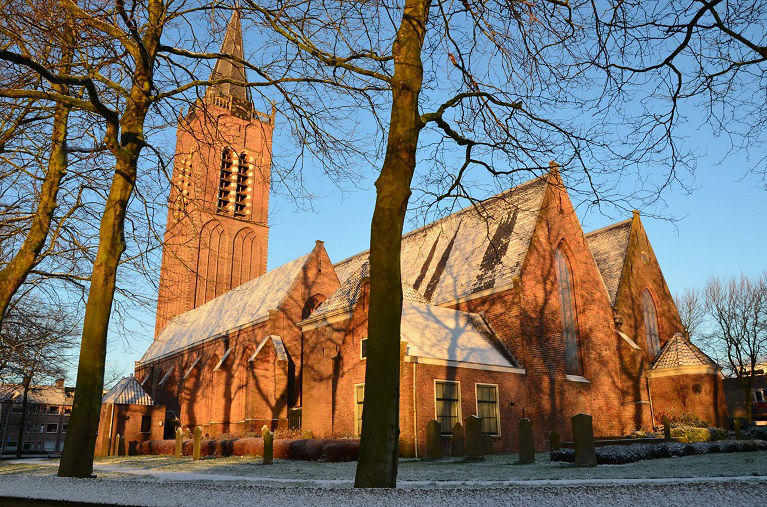The oldest church in Beverwijk, built in 1592.
Museum Kennemerland
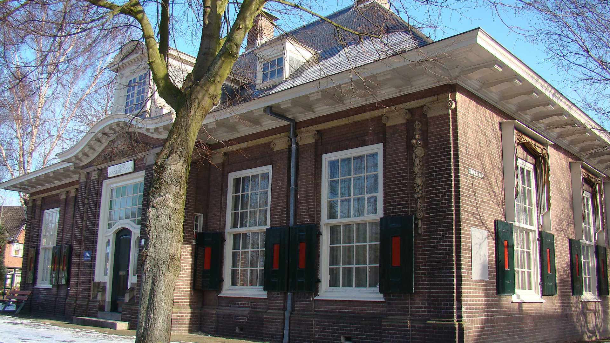The museum pays attention to the history of Midden-Kennemerland , in particular the places Beverwijk, Heemskerk and Velsen . The permanent collection consists of a large number of subsets, which have been built up over the years through purchases or gifts. The Velser pottery and the Kinheim carpets are the largest collections.
Sporthal Beverwijk (Whale)
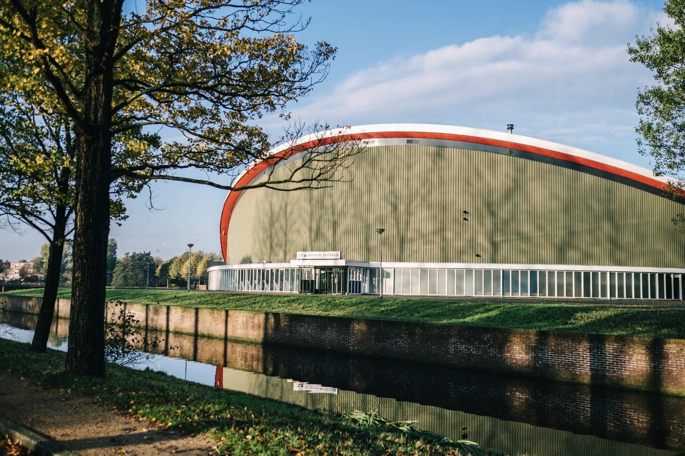This beautiful and representative sports hall, located in the Overbos city park and located on the van Loenenlaan 1 in Beverwijk, was built in 1971 and is characterized by a unique roof construction. The sports hall meets all modern requirements for a sports hall. The accommodation is suitable for all sports, but is also suitable for events other than sports.
About Heemskerk
About the city
Heemskerk is a city in the province of North Holland.It is not certain where the name of Heemskerk comes from. The town was already known during the Middle Ages. In an official deed from the year of 1063, the town was known as Hemezen Kyrica, Latinized Frisian meaning Church of Hemezen, a Frisian nun who lived in a religious house there. There are several places you can go to while visiting Heemskerk:
Huis van Hilde

Huis van Hilde (Hilde's House) is the archaeology information centre and repository of the Dutch province North Holland, which was opened in early 2015. It was named after a model and facial reconstruction that was made of a skeletal find from the 4th century and that came to be known as Hilde.
Air War Museum Fort Veldhuis
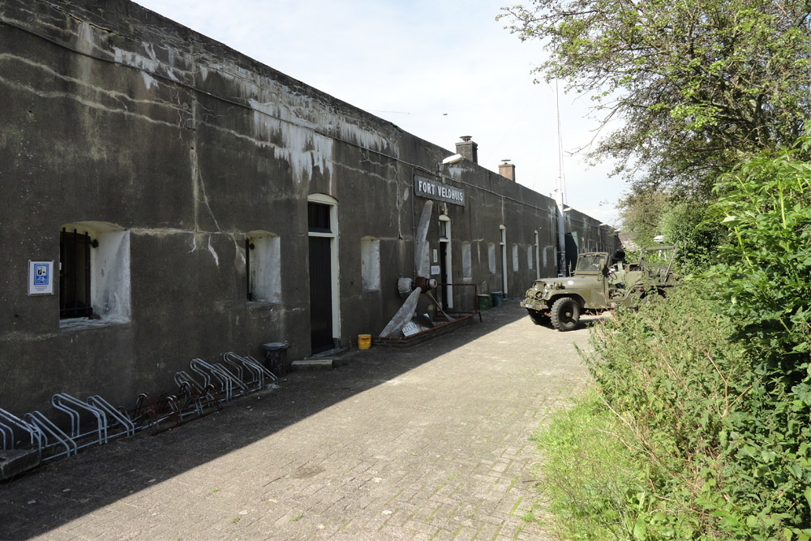The museum has been located in the fort since 1989 and was founded by the Aircraft Recovery Group 1940-1945 foundation. This foundation investigates the air struggle that took place during the Second World War.
Sport centers
BC Heemskerk
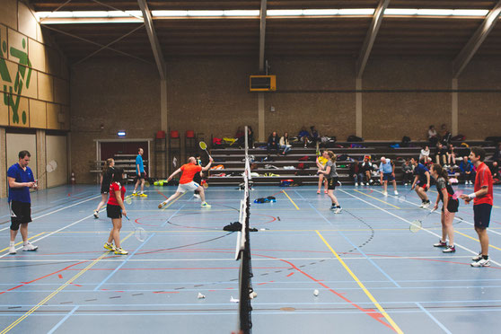Play in the Waterakkers sports hall in Heemskerk weekly.
Sports Olympia Haarlem
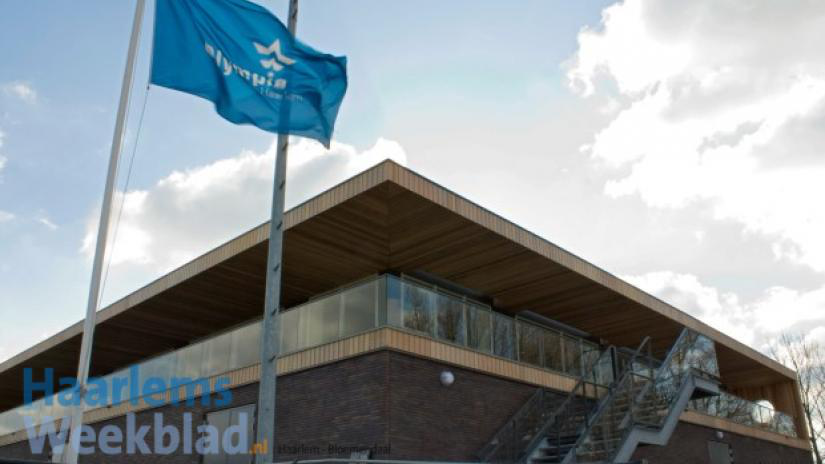At the club to include the disciplines badminton , billiards , darts , baseball and softball , soccer and futsal practiced.
HC Haarlem
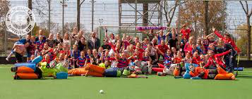Hockey club Haarlem , simply HC Haarlem or just Haarlem , is the largest hockey club from the municipality of Haarlem.
Scopo Atletico
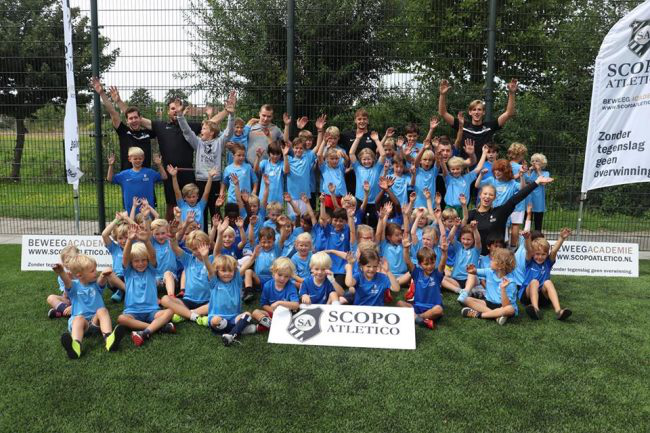Children aged 5 to 12 are introduced to various sports. Scopo Atletico organizes a movement camp in the fall, May and summer holidays.
Five21
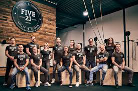Provide training courses in Boxing, Weightlifting, Jiu Jitsu,...
Sport club HLC
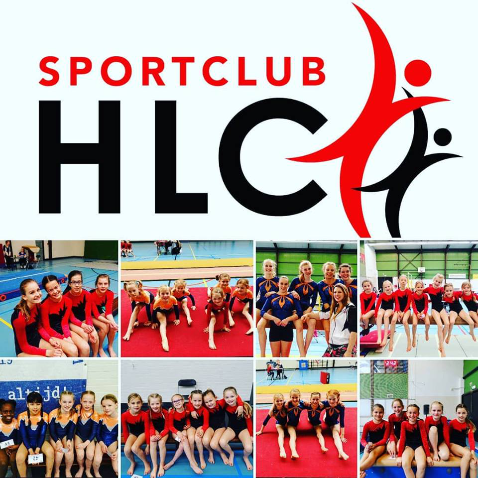Gymnastic club for all people.
Helden van Haarlem
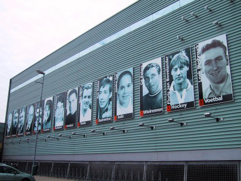Honoring the top athletes in Haarlem.